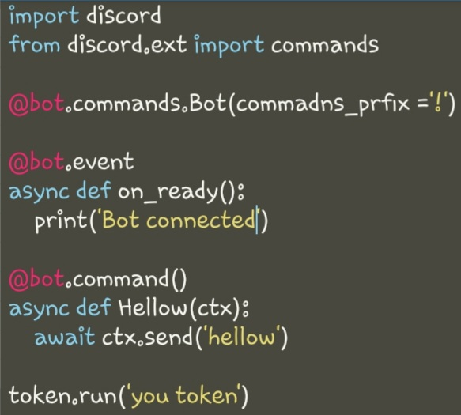
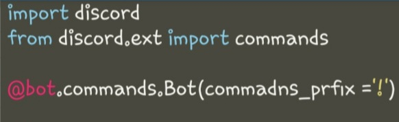
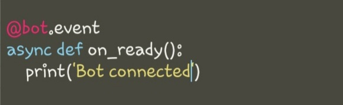
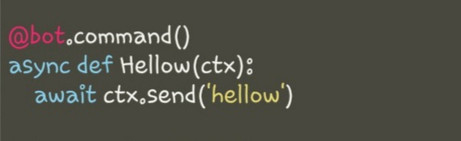
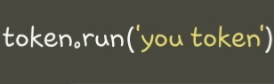

Добро пожаловать на сайт со скриптами о discord.py эти скрипты буду написаны на python
полный скрипт на модуль discord.py

| 
строки (import discord) и (from discord.ext import commands)
они обозначают импорт модуля (discord. py)
строка (@bot.commands.Bot(command_prefix = '!'))
она обозначает префикс команд тоесть с какого знака команда
будет начинатся тоесть у нас в префиксе указан ! знак тоесть
он и будет вводиться перед командой
| 
стороки
@bot.event()
async def on_ready():
print("я готов к работе")
они обозначают то-что после запуска бота в cmd
панели высветится то слово каторое мы указали в ковычках
тоесть там можно написать разные слова какие вам угодно и они
будут высвечиватся при запуске в консоле
| 
строки
@bot.command()
async def Hellow(ctx):
await ctx.send('hellow')
эти строки самые важные эти строки и делают команды
например во 2 строке написано слово Hellow после слова
def это и есть команда а что вы напишите в 3 строке в скобках
то он и ответит на эту команду
| 
последняя строка
token.run(you token)
здесь надо место слов "you token" надо вписать ваш
токе бота
надеюсь вам помог написать вашего первого бота
вскоре сдесь появится раздел где будет написано как
и где взять токен и как приглосить бота
|